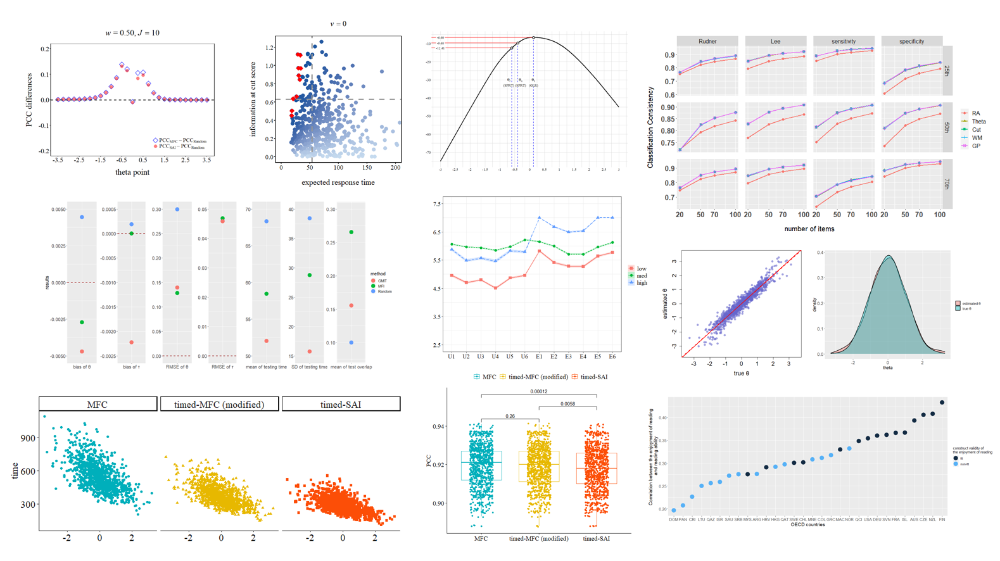

Welcome to my blog!
Let's try some great things together with me ; )
Four Tips You Should Know When Writing A Stan Programme
July 3, 2023
Estimating parameters of a model is always a thrilling moment, especially when that is your own model! One popular procedure for realizing this goal is the Markov chain Monte Carlo (MCMC) method. It has a long tradition of success in constructing desired posterior distributions and facilitating solutions. For MCMCers, Stan offers a really fast sampler and an easy-to-learn modeling language. With its spectacular features, it has amassed a considerable user base. Although most of our interactions with Stan are joyful, there are still potential holes that might trouble us for several weeks or even months. In this article, I will share four tips to help you avoid pitfalls and save your valuable time! [Read more]
Codes for Various Plots I Have Drawn Before
Updated on July 15, 2022
This article may be useful to you if you want to have similar features on your plots. Here you can figure out how to include additional text and lines, how to organize the point according to a specific order, how to change the transparency, etc. [Read more]
Tutorial: A Very Very Quick Guide for R
December 15, 2021
When we first come up with a plan to learn something new, it is more likely for us to keep working toward that goal if we get positive feedback immediately. Now! The prompt feedback you are looking for when learning R is here! After reading this article, you surely will be equipped with the ability to start your own project and the paintbrush to draw a bigger picture. Let's start! [Read more]
How to Carry Out A Computerized Adaptive Test with Response time?
December 13, 2021
Process data tell a lot. It is a natural thought to utilize response time in computer-based testing since such data is readily available. Herein, I will illustrate how to incorporate response time in item selection methods for computerized adaptive testing. In this demo, you can see (a) the generation process for response time based on the lognormal model, (b) a complete routine for computerized adaptive testing, and (c) the performance of different item selection methods. [Read more]
Maximum Likelihood Estimation of Examinees' Ability Using Newton's Method
December 01, 2020
Obtaining the examinee's ability estimate is always the very first step for a psychometrician to move further, for example, servicing for the selection of the next item during the process of online calibration or adaptive testing. In this article, a detailed description of R codes for maximum likelihood estimation using Newton-Raphson accompanied by the implementation of the downhill algorithm is presented. With these codes, you can easily use them to estimate your own theta with your item parameters! [Read more]
How to apply a (U.S.) Ph.D. program (in Chinese)
July 19, 2023
Great news! I got offers from UCLA, UC Berkeley, Stanford, University of Georgia, University of Maryland (College Park), UT-Austin, and Teachers College (Columbia University)! I documented my entire application process and experience. From selecting excellent graduate programs to navigating online applications, I have compiled a treasure trove of wisdom that I am eager to share with all of you! This article was written in Chinese, but do not worry, you can easily use translation software to translate it into the language of your choice. [Read more]